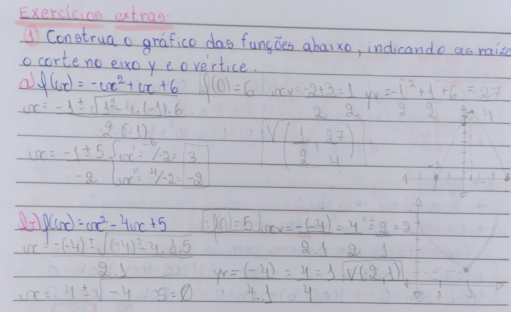
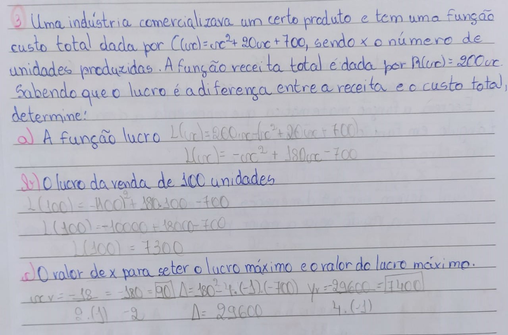
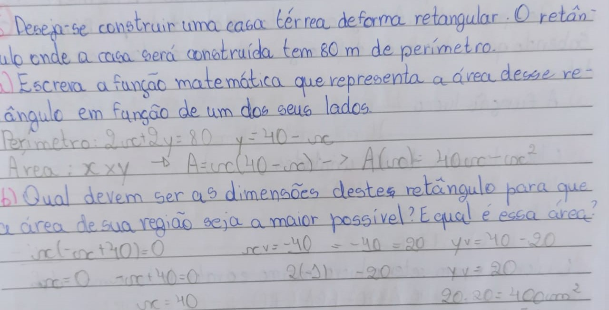

Funções Quadráticas
A Função Quadrática, também conhecida como função de 2°, é representada pela expressão:
𝑓(𝑥) = 𝑎𝑥2 + 𝑏𝑥 + 𝑐
- Uma função quádratica sempre resultará em uma parábola;
- Uma função quadrática pode ter ou não raízes;
- A representação da parabóla dependerá de diferentes fatores, como:
- Concavidade;
- Raízes;
- Vértice;
- Interseção com o eixo y.
Todos os coeficientes são de extrema importância para descobrirmos esses fatores.
Abaixo você poderá ver a representação de uma parabóla feita no geogebra, e ao mexer nos coeficientes que estão no lado esquerdo poderá perceber algumas alterações nela.
O coeficiente 𝑎 está diretamente ligado com a convavidade da parábola, visto que:
- a < 0 = concavidade virada para baixo
- a > 0 = concavidade virada para cima
O coeficiente 𝑏 indica a inclinação da parábola no eixo y, isso levando em consideração exatamente seu corte no eixo y, sem esquecer que se 𝑏 for negativo irá para o lado positivo e vice-versa.
O coeficiente 𝑐 não é nada mais e nada menos que o corte da parábola no eixo y.
Gráfico
Podemos construir um gráfico de função quadrática atribuindo valores ao x, porém levando em consideração que para termos uma parábola precisamos dos certeiros pontos, que podemos demorar para encontrar, é óbvio que o ser humano acharia uma maneira mais fácil de resolver isso! Para construirmos o gráfico teremos que seguir 4 passos:
- Descobrir a concavidade.
- Descobrir as raízes, ou talvez a inexistência delas.
- Descobrir a interseção no eixo y.
- Descobrir as coordenadas do vértice.
1 - Descobrindo a Concavidade
Como explicado anteriormente, para descobrirmos a concavidade da parábola basta analisarmos o valor do coeficiente 𝑎. Se o 𝑎 for negativo, ou seja 𝑎 < 0, a concavidade ficará voltada para cima, mas caso 𝑎 for positivo, ou seja 𝑎 > 0, a concavidade ficará voltada para baixo.
2 - Descobrindo as Raízes
As raízes são o corte da parábola no eixo x. Elas podem ser descobertas através de diferentes maneiras, porém a mais conhecida é através da fórmula de bhaskára, onde:
Observação: A quantidade de raízes de uma função quadrática vai depender o valor de Δ, então:
- Se Δ > 0, a função terá duas raízes reais diferentes;
- Se Δ = 0, a função terá apenas uma raíz real;
- Se Δ < 0, a função não terá raízes reais.
3 - Descobrindo Interseção no Eixo Y
A interseção no eixo y é basicamente a coordenada onde a parábola vai cortar no eixo y, para sabermos isso basta olharmos o valor do coeficiente c, por exemplo, caso for 4 a parábola vai cortar no 4.
4 - Descobrindo o Vértice
O vértice é o ponto mais alto ou mais baixo da parábola, dependendo de sua concavidade, é através dele que descobrimos o ponto máximo e o ponto minímo em questões que, por exemplo, pedem a altura máxima ou altura miníma de alguma coisa.
Podemos descobrir o vértice através de duas formas diferentes:
- Através das raízes, caso a função quadrática tiver raízes basta somar elas e depois dividir por 2, assim encontrará o Xv, depois basta substituir o valor de x na função de forma geral para encontrar o Yv.
- Através de uma fórmula:
Formas da Função Quadrática
Além de sua forma geral, a mais conhecida e utilizada, a função quadrática também possuí outras fórmulas, sendo elas a forma fatorada, onde usasse os valores das raízes, e a forma canônica, onde é utilizado a coordenada do vértice.
| Equação | Função | |
|---|---|---|
| Forma Geral | 𝑎𝑥2 + 𝑏𝑥 + 𝑐 = 0 | 𝑓(𝑥) = 𝑎𝑥2 + 𝑏𝑥 + 𝑐 |
| Forma Fatorada | 𝑎(𝑥 - 𝑥1)(𝑥 - 𝑥2) = 0 | 𝑓(𝑥) = 𝑎(𝑥 - 𝑥1)(𝑥 - 𝑥2) |
| Forma Canônica | 𝑎(𝑥 - 𝑥v)2 + yv = 0 | 𝑓(𝑥) = 𝑎(𝑥 - 𝑥v)2 + yv |
Atividades
Deixarei a foto de algumas atividades realizadas em aula:



Além das atividades realizadas em aula, também deixarei um vídeo onde estão sendo resolvidas questões do enem que estão relacionadas diretamente com funções quadráticas:
Considerações
Apesar de toda a demonstração de ódio na introdução em relação a bháskara, devo dizer que apesar do tamanho desnecessário que ela ocupa no caderno nunca cheguei a ter dificuldade em resolvê-la, até porque foi um dos conteúdos que mais tive interação no último ano de ensino fundamental. Porém, devo ressaltar que aprendi de uma forma diferente, onde atribuímos pontos para o x e pronto, indo na sorte de que seria os que precisaríamos, mas nesse ano foi muito mais fácil construir o gráfico com os passos mostrados!
Além disso, uma das partes que mais gostei de aprender foi poder imaginar a fórmula apenas olhando o gráfico, saber que o coeficiente a tinha relação com a concavidade(que eu nem fazia ideia que existia), que as raízes eram os cortes da parábola no eixo x e o c era o corte no eixo y, e também aprender sobre o vértice e sua grande importância em questões de vestibulares, sendo que eu nunca tinha sequer ouvido falar sobre ele enquanto aprendi anteriormente sobre as funções quadráticas. Acho que posso dizer que não tive problemas nesse conteúdo e foi o que mais gostei de aprender até agora.